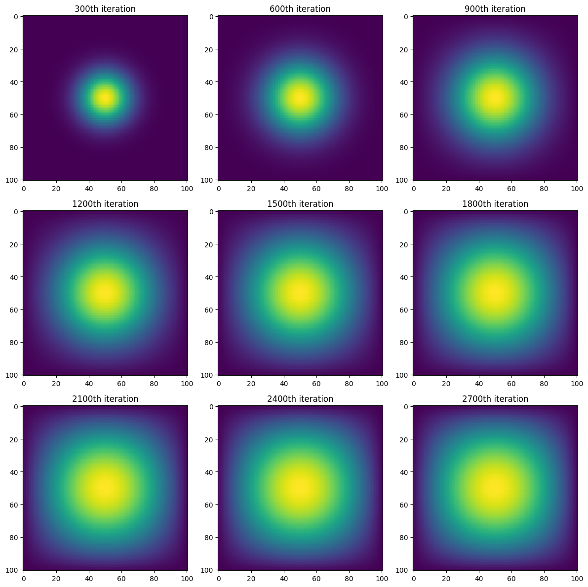

import numpy as np
from matplotlib import pyplot as pltIn this blog post, we will be going over how to use numpy arrays as well as comparing special tools to work with linear algebra. For our example, we will be conducting a simulation of two-dimensional heat diffusion maps.
Because we will be working with numpy as well as data visualization, we will need to import both numpy as well as pyplot.
For our 2D-heat diffusion maps, we will be using the following parameters:
N = 101
epsilon = 0.2
iters = 2700Here, our N represents the size of our array (meaning there will be N^2 values in our array) epsilon represents the “heaviness / stability” of each of our update, and iters represents the amount of iterations our simulation will run.
First, we will need to create an an initial heatmap to iterate and update upon. We can create an initial N x N empty grid with a singular unit of heat at the center with the following line of code:
u0 = np.zeros((N, N)) # Creating NxN numpy array with entries of 0
u0[int(N/2), int(N/2)] = 1.0 # Assigning the midpoint value of initial array to 1
plt.imshow(u0) # Plotting numpy array with the 1 unit of heat at midpoint
Great! Now that we have our initical condition heatmap, we can using different methods to update it.
Matrix Multiplication
The first method we will use is matrix multiplication. Essentially, we want to construct an updating matrix A that will act upon the flattened version of u which will be iterated and updated each time.
Thus, the first function we want to create is for constructing our update matrix A (this matrix is called a finite difference matrix). We want our update in discrete time to be represented by the following function:
![]()
Thus, we want our updating matrix A to represent the paranthesis part that is multiplied to epsilon.
![]()
Here, each u will represent a diagonal in our matrix: * u[i+1][j]: represents nth upper diagonal * u[i-1][j]: represents nth lower diagonal * u[i][j+1]: represents 1st upper diagonal * u[i][j-1]: represents 1st lower diagonal * u[i][j]: main diagonal
With this information, we can now create our function to account for the desired grid size N, which should look something like this:
# import inspect
# from heat_equation import get_A
# print(inspect.getsource(get_A))def get_A(N):
"""Creates a 2D finite difference matrix by adjusting the diagonal entries
Args:
N: Integer representing size of desired matrix
Returns:
N x N adjusting matrix.
"""
# Getting total number of grid points
n = N * N
# Creating list with representative diagonals
diagonals = [-4 * np.ones(n), np.ones(n-1), np.ones(n-1), np.ones(n-N), np.ones(n-N)]
# Adjusting diagonals to account periodic 0's
diagonals[1][(N-1)::N] = 0
diagonals[2][(N-1)::N] = 0
# Constructing finite difference matrix
A = np.diag(diagonals[0]) + np.diag(diagonals[1], 1) + np.diag(diagonals[2], -1) + np.diag(diagonals[3], N) + np.diag(diagonals[4], -N)
return ANow that we have our function, let’s see what our function looks like with a test value parameter. For simplicity, we will use 3.
get_A(3)array([[-4., 1., 0., 1., 0., 0., 0., 0., 0.],
[ 1., -4., 1., 0., 1., 0., 0., 0., 0.],
[ 0., 1., -4., 0., 0., 1., 0., 0., 0.],
[ 1., 0., 0., -4., 1., 0., 1., 0., 0.],
[ 0., 1., 0., 1., -4., 1., 0., 1., 0.],
[ 0., 0., 1., 0., 1., -4., 0., 0., 1.],
[ 0., 0., 0., 1., 0., 0., -4., 1., 0.],
[ 0., 0., 0., 0., 1., 0., 1., -4., 1.],
[ 0., 0., 0., 0., 0., 1., 0., 1., -4.]])Our code outputted the matrix that we were looking for. Now, we can start on our next step: updating u.
To match the discrete time update equation, we want to take into account 3 parameters: our update matrix A, the iterated matrix u, and our “scaling/stability” value epsilon. Because we already have all the components of the equation. We can just type out the equation in our function. So our function should look something like this:
# from heat_equation import advance_time_matvecmul
# import inspect
# print(inspect.getsource(advance_time_matvecmul))def advance_time_matvecmul(A, u, epsilon):
"""Advances the simulation by one timestep, via matrix-vector multiplication
Args:
A: The 2d finite difference matrix, N^2 x N^2.
u: N x N grid state at timestep k.
epsilon: stability constant.
Returns:
N x N Grid state at timestep k+1.
"""
N = u.shape[0] # Calculating size of grid
u = u + epsilon * (A @ u.flatten()).reshape((N, N)) # Flattening 2D grid 'u', Matrix mult. with
# A, Reshaping back to original grade shape,
# Updating 'u' with matrix multiplication + epsilon
return uWith both of these equations, we can now run our iterations.
First, because we are comparing different methods for creating identical heatmaps, we want to import time in order to see execution time.
import timeNext, we want to create each of our variable in order to be able to use the advance_time_matvecmul function. We already have epsilon established earlier, so we just need A and u. Because we want to see the development of the grid with each update, we want to create a list to append the u at different iterations. ![Screenshot 2024-02-23 4.41.22 PM.png]() Thus, we will use the following block of code:
Thus, we will use the following block of code:
A = get_A(N)
u = u0
u_array = []
# Starting execution time for iterations
start_time = time.time()
for i in range(1,iters+1):
u = advance_time_matvecmul(A, u, epsilon) # Updating our heatmap grid
if i % 300 == 0:
u_array.append(u.copy()) # Appending every 300-th heatmap grid
# Calculating iteration time
execution_time = time.time() - start_time
print("Execution Time is ", execution_time, " seconds")Execution Time is 233.45097470283508 secondsThis approach took quite a long time, taking almost 4 minutes to go through 2700 iterations.
Also note that through the conditional statement, we only appended 9 versions of u. With this appended list, we can now visualize the diffusion heatmaps. Because we have 9 grids, we can do 3x3 subplots by using pyplot through the following block of code:
def diffusion_visualization(list):
"""Generating a visualization of the 9 developed heatmap grids
Args:
list: list of appended heatmap grids
Returns:
3 rows, 3 columns of subplots of the heatmap grids
"""
# Generating base subplots
fig, ax = plt.subplots(3, 3, figsize = (12, 12))
# Creating indexing counter for list
count = 0
# Looping through row
for i in range(3):
# Looping through column
for j in range(3):
# Plotting/Showing the nth item in the list
ax[i][j].imshow(list[count])
# Setting title of the nth item in the list
ax[i][j].set_title(f"{(count+1)*300}th iteration")
# Iterator
count += 1
plt.tight_layout()
plt.show()Great! Now that we have our diffusion heat visualization function, let’s run it using our list of wanted iterations.
diffusion_visualization(u_array)
Notice that as more iterations occur, the heatmap develops, becoming more vibrant with the circles getting wider (exactly what we want).
Sparse Matrix in JAX
Now that we have our initial method down, let’s use another method to increase computational time. For this one, we will use sparse matrices from JAX, a Python library designed for high-performance numerical computing.
So first, we need to import the following:
import jax
from jax.experimental import sparse # Allowing us to create sparse matrices
import jax.numpy as jnp # Allowing us to utilize jax numpy
from jax import jit # Allowing us to use Just-In-Time compilations
# to execute JAX function effectively
The next step we want to do is create a function to output us a sparse matrix. Because we already have the function get_A to help us output a finite difference matrix, we can use call get_A in this function to create the array A, which we will then turn into a JAX numpy sparse array. We can do that with the following block of code:
# from heat_equation import get_sparse_A
# import inspect
# print(inspect.getsource(get_sparse_A))def get_sparse_A(N):
""" Advancing simulation through BCOO (JAX batched coordimate)
to create sparse updating matrix
Args:
N: size of array
Returns:
an N x N sparse updating matrix
"""
# Creating updating matrix
A = get_A(N)
# Transforming A into JAX numpy array
jnp_A = jnp.array(A)
# Converting into sparse matrix
A_sp_matrix = sparse.BCOO.fromdense(jnp_A)
return A_sp_matrixNow that we have our new sparse matrix, we can repeat the process of iteration and visualization. However, we also want to use the jit-ed version of advance_time_matvecmul to execute the JAX numpys for effectively. Thus our code should look something like this:
# Getting elements for advance_time function and iteration for loop
A_sp_matrix = get_sparse_A(N)
u = u0
u_array_sparse = []
# Using JIT compilation for advance_time function
jitted_advance_time_matvecmul = jax.jit(advance_time_matvecmul)
start_time = time.time()
for i in range(1,iters+1):
u = jitted_advance_time_matvecmul(A_sp_matrix, u, epsilon)
if i % 300 ==0:
u_array_sparse.append(u.copy())
execution_time = time.time() - start_time
print("Execution Time is ", execution_time, " seconds")
diffusion_visualization(u_array_sparse)Execution Time is 1.3260242938995361 seconds
Notice that this function is MUCH faster than the first process! It took only 1.33 seconds.
Direct Operation with Numpy
For this method, rather than relying on an updating matrix, we can update matrix u itself by using numpy’s vectorized array operations.
Therefore, we will create an updated version of advance_time_vatmecmul that only needs two parameters: u and epsilon.
Again, we want our function to execute the updating equation above. Except this time. Rather than writing a matrix to represent the paranthetical part. we can use numpy to represent each u[i+1][j], u[i-1][j], u[i][j+1], u[i][j-1].
We can do this with using np.roll(), where we shift each of the points either left/right or up/down, depending on which we need. However, an important factor of np.roll() that we need to know is that it also takes the last point in the array and makes it the first and vice versa, which we don’t want. Thus we need to pad our array with 0 along the edge to prevent this. Thus our code should look something like this:
# from heat_equation import advance_time_numpy
# import inspect
# print(inspect.getsource(advance_time_numpy))def advance_time_numpy(u, epsilon):
"""Advances the simulation by one timestep, via numpy rolling
Args:
u: N x N grid state at timestep k.
epsilon: stability constant.
Returns:
N x N Grid state at timestep k+1.
"""
# Creating padded version of u with 0's along edge
padded_u = np.pad(u, 1, mode = 'constant')
# Creating rolled version of padded u
right_roll = np.roll(padded_u, 1, axis = 1)
left_roll = np.roll(padded_u, -1, axis = 1)
up_roll = np.roll(padded_u, -1, axis = 0)
down_roll = np.roll(padded_u, 1, axis = 0)
# Updating u
numpy_u = padded_u + epsilon*(right_roll + left_roll + up_roll + down_roll - (4*padded_u))
# Removing the 0's on the edge
numpy_u_sliced = numpy_u[1:-1, 1:-1]
return numpy_u_slicedNotice that before returning the updated u, we used sliced indexing because the padded u is a (N+2) x (N+2) array, but we only want a N x N array.
With this function, we can again run our iterations and visualization and see how long this takes.
numpy_u = u0
results_numpy = []
start_time = time.time()
for i in range(1,iters+1):
numpy_u = advance_time_numpy(numpy_u, epsilon)
if i % 300 ==0:
results_numpy.append(numpy_u.copy())
execution_time = time.time() - start_time
print("Execution Time is ", execution_time, " seconds")
diffusion_visualization(results_numpy)Execution Time is 0.522552490234375 seconds
This time, it only takes 0.52 seconds, 2.3 times as fast!
JAX
The last method we will use is jax, similar to when we did sparse matrix, we will do an jax version of the previous function, which will allow us to use just-in-time compilation. Benefit of this method as well is that we will not need to rely on (sparse) matrix multiplication.
Everything will be the same as advance_time_numpy, but we just replace all the numpy with jax.numpy, or jnp. Thus we should get the following code:
# from heat_equation import advance_time_jax
# import inspect
# print(inspect.getsource(advance_time_jax))def advance_time_jax(u, epsilon):
"""Advances the simulation by one timestep, via jax numpy rolling
Args:
u: N x N grid state at timestep k.
epsilon: stability constant.
Returns:
N x N Grid state at timestep k+1.
"""
# Creating padded version of u with 0's along edge
padded_u = jnp.pad(u, 1, mode = 'constant')
# Creating rolled version of padded u
right_roll = jnp.roll(padded_u, 1, axis = 1)
left_roll = jnp.roll(padded_u, -1, axis = 1)
up_roll = jnp.roll(padded_u, -1, axis = 0)
down_roll = jnp.roll(padded_u, 1, axis = 0)
# Updating u
jnp_u = padded_u + epsilon*(right_roll + left_roll + up_roll + down_roll - (4*padded_u))
# Removing the 0's on the edge
jnp_u_sliced = jnp_u[1:-1, 1:-1]
return jnp_u_slicedFor one last time, we will run our iteration and visualization. Because we are dealing with jax numpy again, we will use the jit-ed version of advance_time_jax.
jitted_jax = jax.jit(advance_time_jax)
jnp_u = u0
results_jnp = []
start_time = time.time()
for i in range(1,iters+1):
jnp_u = jitted_jax(jnp_u, epsilon)
if i % 300 ==0:
results_jnp.append(jnp_u.copy())
execution_time = time.time() - start_time
print("Execution Time is ", execution_time, " seconds")
diffusion_visualization(results_jnp)Execution Time is 0.08782696723937988 secondsThis one is the fastest of them all, taking 0.09 seconds, more than 5 times as fast as the previous one!
Comparison
Out of all of these, the fastest is of course with jax as it took only 0.09 seconds, followed by direct operation through numpy, then sparse matrix, and lastly direct matrix multiplication.
Out of all of these, I think that direct operation through nunmpy was the easiest to write since it did not require me to write two functions, and I did not have to use an additional updating matrix, which got really complicated.